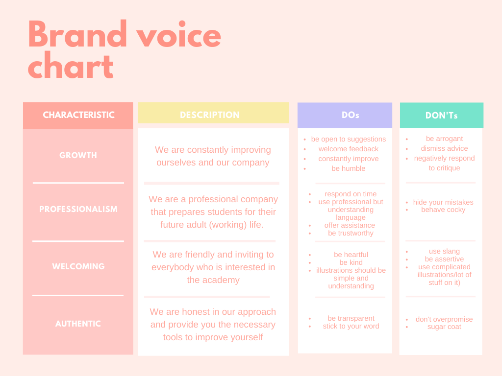
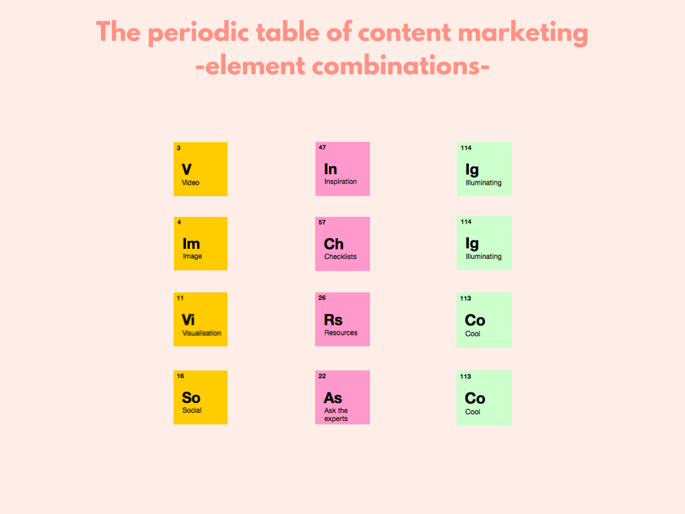

SEO, ToV, Design guidelines
a. Tone of voice:
 b. SEO guidelines:
This guide is a combination of our on-page and off-page SEO of the company. on-page SEO refers to the factors you can control on your own website, off-page SEO refers to the page ranking factors that occur off your website. In the following you can read everything about how we control our website, with for example keywords and tags, and how we control the ranking factors, with for example links.
-
Internal (Links):
-
Where can we include Links on other Websites/Platforms to get more traffic on our Website
- In the footer of the website the users can find links to Instagram, Facebook and TikTok
- In the contact section or page
- Linked image if those are posted on a social media platform
-
Keywords:
- Keywords resulted from the comparison between the sweetspot and our research based of what users search:
- #BAA, #Business Academy Arrhus, #Viby J , #eaaa
- #School, #Aarhus, #Denmark, #Study, #Abroad, #development, # IT, #Erasmus, #Exchange, #Multimedia Design, #applying, #front-end
- We decided to focus more on the “Long Tail” from the “Demand Curve”, this means that we will use a combination of multiple words as a keyword (one general and one specific f.e. animal shelter and vibyJ)
- #study at BAAA, #how to apply to Business Academy Aarhus, #is BAAA ranked high?, #Exchange at BAA, #Erasmus student at BAA, #Multimedia design at BAA
- Specific Keywords:
- General Keywords:
-
Long Tail:
-
Meta Description:
- Meta tags
- Use short titles and headlines that answer different search queries
-
Header (tags)
- Use a long description but it’s really important to start with something explanatory and then because the description is long it will be shown as “see more…. or read more…” (this shows that we have more to offer)
-
Title (tags)
- Title tag has to be very specific because that will be a the first thing showed on search engines
- Title, url and description that increases the CTR ( this is very important) in ranking
-
Content
- Use semantic tags for parent components
- Use links and a tags in the website that links to different pages or section on your page
-
-
Loading speed
- Simple layout with not too many applications
- Reduce the file size of images, videos, and other assets
-
Alt(Tags)
- Every image/video has a description that describes it.